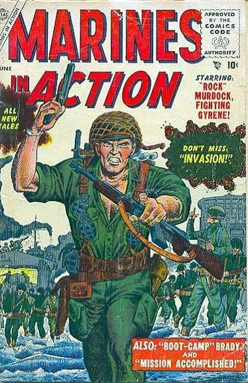

Marines In Action

Series: 14 issues 1955
Publisher: Atlas, Marvel
Written by
Illustrations by Joe Maneely
Rock Murdock the Fighting Gyrene in "Red Raid"; "Invasion"; Boot-Camp Brady in "You're in the Marines"; "Mission Accomplished" (pencils by Bob Forgione, inks by Jack Abel); plus a two-page text story, "Corporal's Ear."